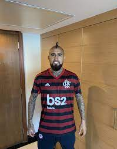

Flamengo contrata Everton Cebolinha em momento crucial na temporada
terça-feira 05/07/2022

O Flamengo está cada vez mais próximo de contratar o ponta-esquerda Everton Cebolinha, que atualmente está no Benfica (POR). Caso a negociação seja sacramentada, o atacante chega ao Rubro-Negro em um momento crucial para a sequência de trabalho do técnico Dorival Júnior. Isso porque, Bruno Henrique sofreu uma lesão multiligamentar no joelho direito na última quarta-feira (15), contra o Cuiabá, no Maracanã. No momento, o Departamento Médico do Flamengo avalia a situação do jogador para decidir o melhor tratamento para o atacante.Caso decida por uma recuperação conservadora, ou seja, sem cirurgia, o camisa 27 voltará a campo em até quatro meses. No entanto, se os especialistas acharem melhor realizar uma operação, a estimativa de retorno aos gramados fica entre oito a dez meses. Desta forma, a contratação de Everton Cebolinha se torna fundamental para o Flamengo, visto que o ponta-esquerda chegaria à Gávea para substituir o camisa 27. O Rubro-Negro pagará 13,5 milhões de euros fixos (cerca de R$ 71 milhões na cotação atual), com bônus por metas atingidas que podem fazer este montante chegar a 16 milhões de euros (R$ 84,1 milhões)Com a ausência de Bruno Henrique e à espera de Everton Cebolinha, o técnico Dorival Júnior foca suas atenções para o confronto deste domingo (19), contra o Atlético-MG, a partir das 16h (horário de Brasília), no Mineirão. A partida é válida pela 13ª rodada do Campeonato Brasileiro.
A sua inconsistência ao longo do último ano foi motivo de discussões entre os torcedores do Benfica. Enquanto uma parcela acredita que ele deveria ter tido mais tempo para se firmar na equipe, outra entende que ele não fará falta ao elenco. “Acreditam no Papai Noel e esperam magias”, disse um aficionado revoltado.O fato é que, no Flamengo, se espera uma versão do jogador mais decisiva como foi no Grêmio campeão da Libertadores em 2017. Cebolinha fez 47 gols em 180 jogos e, além da conquista continental, ganhou a Copa do Brasil de 2016 e a Recopa de 2018. O atacante também tem uma Copa América com a seleção. A transferência do atacante para o Flamengo é uma necessidade debatida abertamente por Dorival Júnior desde que foi anunciado há cerca de uma semana. Por conta disso, o Rubro-Negro não poupou esforços e aceitou comprá-lo pelo valor de 13 milhões de euros (R$ 68,6 milhões). Cebolinha terá no gigante carioca o desafio de dar mais velocidade ao ataque que não vive grande fase em 2022. Na última temporada, ele participou de 46 partidas, fez sete gols e distribuiu sete assistências. Na Champions, foi titular em sete duelos, incluindo contra o Liverpool nas quartas, mas terminou a competição em branco.
contratação de ArturoVidal
quarta-feira 06/07/2022
O flerte antigo vai virar relação séria entre Arturo Vidal e o Flamengo. O clube carioca acertou a contratação do meia chileno, de 35 anos. A informação foi divulgada pelo jornalista Benjamin Back. Vidal fez alguns acenos para o Flamengo, como vestir o manto rubro-negro e postar fotos, além de falar publicamente sobre o desejo de defender o clube carioca. De saída da Inter de Milão, ele pode desembarcar no Rio de Janeiro já na próxima semana. O meia chileno vai assinar contrato com o Flamengo até o fim de 2023. Vidal vem para ocupar uma posição carente no clube carioca, de jogador com pegada e presença ofensiva. Após se despedir de Andreas Pereira, cujo contrato de empréstimo terminou no dia 30, o Flamengo age rapidamente e acerta com um reforço de peso internacional. Revelado pelo Colo-Colo, do Chile, Vidal foi para a Europa na temporada 2007/2008, defender o Bayer Leverkusen, da Alemanha. Em 2011, o chileno foi para a Juventus, da Itália. O volante também defendeu o Bayern de Munique e o Barcelona, até ir para a Inter de Milão, em 2020. Com acordo para defender o Flamengo até dezembro de 2023, Arturo Vidal desembarcará no Rio de Janeiro na tarde desta quarta-feira, no Aeroporto do Galeão, e marcará presença no Maracanã, onde o Rubro-Negro enfrenta o Tolima, pela Libertadores, a partir das 21h30. O jogador realizará exames e assinará contrato com o clube nos próximos dias. O anúncio oficial do Flamengo, porém, só deve acontecer no dia 16. Antes, Vidal retornará à Itália para resolver pendências e questões pessoais. A viagem para o país onde atuou nas últimas duas temporadas, pela Inter de Milão, deve ocorrer no fim de semana Confirmado como reforço e inscrito na CBF, Vidal poderá atuar pelo Flamengo a partir de 18 de julho, data da abertura da janela de transferências. De férias, o atleta tem mantido uma rotina de treinos no Chile, e a questão física não deve ser problema para o camisa 22.